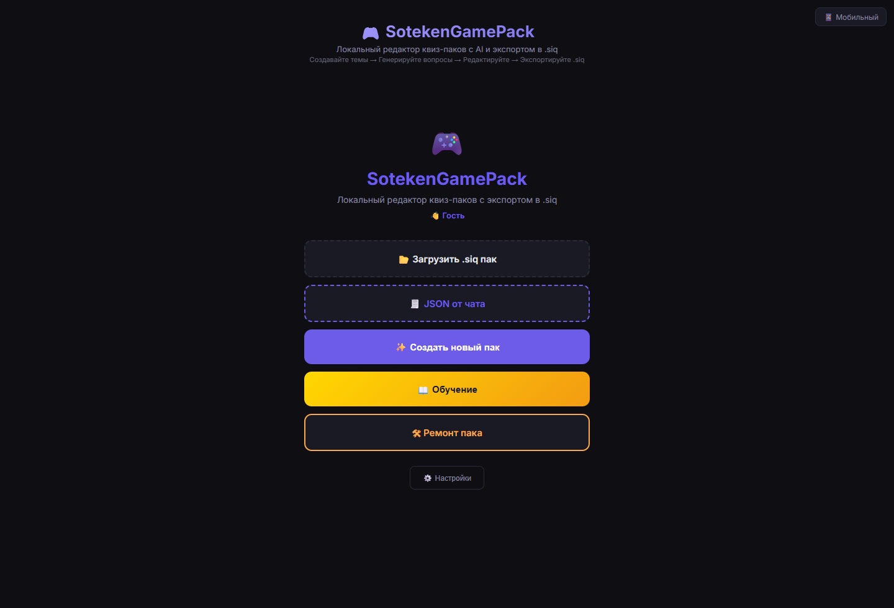

Для обычных пользователей
Не нужно понимать GitHub, XML или структуру `.siq`. Основные действия происходят в браузере через кнопки редактора.
Редактор квиз-паков
Собирайте паки для игр с друзьями: темы, вопросы, мемы, картинки, аудио, видео и экспорт в `.siq`.

Не нужно понимать GitHub, XML или структуру `.siq`. Основные действия происходят в браузере через кнопки редактора.
Можно быстро собрать темы по фильмам, играм, мемам, музыке, друзьям, стримерам или локальным шуткам.
Редактор работает с картинками, аудио и видео, помогает сжимать файлы и проверять проблемные места.
Что делать
Откройте инструкцию скачивания и возьмите готовый архив, когда релиз опубликован.
Начните с пустого пака или импортируйте JSON, который сгенерировал обычный чат.
Вставьте картинки, аудио, видео, обложку и проверьте размер файлов.
Готовый файл можно передать друзьям или открыть в совместимом приложении.
Инструкции
Для разработчиков
Исходный код проекта хранится на GitHub: SotekenGamePack.